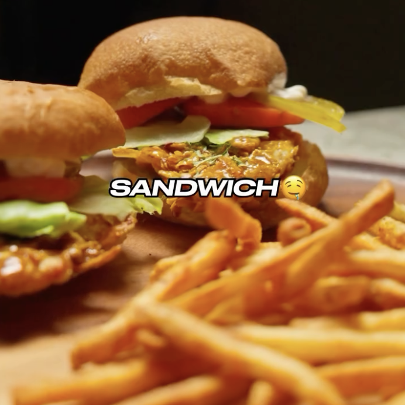

Sandwich Pollo Crispy
Ingredientes:
- 150 g Pollo
- 15 g Harina
- Paprika
- Ajo en Polvo
- Cebolla en Polvo
- Sal
- 1 huevo
- Corn flakes
- Aceite en spray
- 1 cucharadita Aceite
- ½ cda Miel
- 1 cda Salsa Soya
- Ajo
- Hojuelas de chile
- Lechuga
- Tomate
- Pan keto
Instrucciones:
- Inicia en un bowl echando la harina y las especias. Revuelve
- Cubre el pollo con la mezcla
- Moja el pollo con el huevo
- Cúbrelo de corn flakes machacadas
- Metelo a la airfryer por 15 minutos a 180° C (o cocina)
- Haz la salsa en un sartén con aceite, miel, salsa de soya y especias
- Cubre el pollo en la salsa y arma tu sandwich con el pan y los vegetales